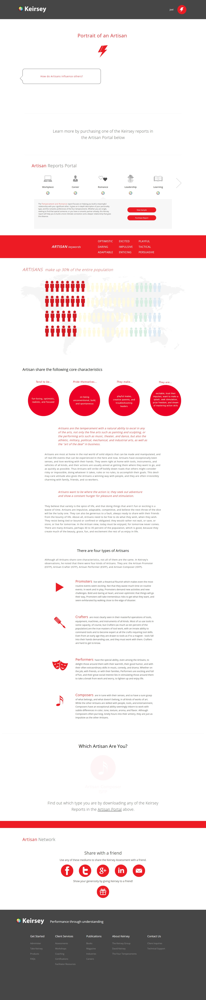

I consider myself to be a very easygoing, calm and patient person. I can be lazy at times. I am introverted, but if I am comfortable I can be more outgoing and energetic. I am usually very tolerable. This is both a good and bad thing, as I have allowed persons to take advantage of me in the past because of it.
Someone i look up to a lot is Jermaine Cole, or J. Cole. He is considered to be one of the best rappers to exist, and is my favourite artiste. I respect him because of the messages he sends in his songs, as well as his humility and humanity. Below is a message from him that I keep in my mind always:
I love video games, particulary one called LEAGUE OF LEGENDS
.
I also love anime, manga and watching YouTube. My favourite YouTuber is CoryxKenshin.
My favourite foods include lasagne, ramen, pasta, and I like anything spicy. I mainly listen to jazz, soul and R&B music,
but I also appreciate rap, classic, reggae and some rock.
I dislike hard physical labour, stupid questions, being ordered around and ignorant people. I dislike bugs, particularly cockroaches. Negativity and toxicity upset me.
Below are the results of a Keirsy Personality Test I completed.
I think this personality test is quite accurate and trustworthy, seeing as it is utilized by the US Military and other large corporations. The results I got seemed quite close to my personality in general. I was assigned the artisan trait. Those under this trait are impulsive, fun-loving, optimistic and spontaneous. All these traits i would apply to myself.